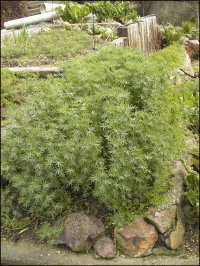
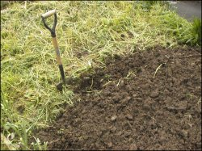

Skip ahead to:
Vege garden prep
In this second article in the series, I want to focus on the preparation and initial planting of your new vegetable garden.
Turn, turn, turn
If you planted a green crop (pictured) over the winter months, or just let the land lie fallow, you will need to prepare the beds for the coming growing season. Your aim here is to turn over the soil with a sharp spade or shovel, completely burying the green part of the plants. Take your spade and push it straight down into the soil, applying pressure with your foot, and remove a section of soil the depth of the spade and set that block of soil to one side, away from the garden.
Move along the garden bed and remove a second block of soil. Then take your third spadeful of soil and weeds or green crop, and place it upside down in the trench you have created. With the side of the spade, tap the exposed soil to break up the clumps. Carry on in this way until all the garden bed has been turned over and placed carefully into the trench you have dug each time. When you have completed the last block you will still have an empty trench – this is where the original two blocks of soil need to be placed upside down. Ideally, you want to be able to leave the garden now for four to six weeks to allow the green matter to break down into ready-made compost.
I always like to wait until Labour Weekend before I begin to plant the vegetables. It is tempting to start earlier but it may prove a fatal mistake. Often the weather may seem settled before this, but then you’ll get a nasty surprise with a late frost or cold patch. At worst, your newly-planted, tender seedlings are wiped out or receive such a setback that they never really recover. Or if you plant earlier when the weather has not settled (into a steady rhythm of gradual warming), you may find that your seedlings are confused and will go directly to the flowering stage to ensure that they set seed for the season. This is called bolting. In the case of lettuces and cabbages they’ll be rendered useless, as they won’t produce a heart but will throw up a flower stalk instead. When this happens you will need to remove them and throw them on the compost stack and begin again.
The power of dung
Around Labour Weekend, sprinkle the top of the soil with a general fertiliser and some well-rotted compost or animal manure. Once again turn the soil over to thoroughly combine. Tap the clumps with the side of your spade or hand trowel to create a lump-free, friable seedbed. Smooth it out with a rake. Try not to walk on the actual soil as this will compress it and remove the air pockets within the soil structure. You may need to lay a wide plank of wood on the top of the garden to prevent this, or if your garden bed is small enough you may be able to lean over it while standing on the grass or path beside it.
A good general-purpose fertiliser is Nitrophoska Blue. You can purchase this at The Warehouse, supermarkets or garden centres. Not only does it have the basic nutrients needed for good healthy growth (nitrogen, potassium and phosphorous), but it also contains a wide variety of trace elements essential for the soil. Compost and animal manures are ideal to use as they will build up and condition the soil and provide humus. They will encourage earthworms to come to your patch of garden.
Earthworms provide a great barometer as to the condition of your soil. They feed on bugs, bacteria and fungus found in organic waste that is decomposing in the soil. Their casts are rich in nutrients, which in turn will quickly feed the soil.
Use the fertiliser as directed on the packet, and use enough of the manure or compost to lay a 2.5 cm layer on top of the soil. The second turning-over of the soil need not be as deep as the first time. Your aim is to combine the nutrient-rich additives with the soil and to break up any clumps.
Planting
I strongly recommend that novice growers buy their seedlings rather than raise their own. You only want to plant four to six of each variety at one time, and you want strong, healthy seedlings. So check out your garden centre or The Warehouse and look for seedlings that are around 10 cm high, that display a healthy green colour (not a pale yellow), and that are planted in a small plastic tray or in individual plastic containers. Soak the seedlings, up to the top of the soil, in a bucket of water before planting out.
Mark out rows with a piece of string secured to a couple of sticks so you can fit as many rows as is practical on your garden bed. Using a clean trowel (a small hand-held spade), dig a hole big enough to hold the seedling without bending over the roots and push back the soil to secure it in place firmly. You will need to consider how big the full-grown plant will be to know how wide to space the seedlings. Your aim is to have the fully-grown plants to be virtually touching to discourage weed growth, conserve water and maximise the use of the beds. So for lettuces and cabbages allow 20 cm between the seedlings and rows.
Considering that you want to be able to harvest vegetables regularly through summer and autumn, only plant a few of one variety at two- to three-week intervals, remembering to leave enough vacant soil for this at the start. As you harvest one row, replant it with either the same or another vegetable variety. Suggested seedlings include different lettuce varieties, cabbage, silver beet and broccoli. After planting, always scatter a few pellets of slug bait around the seedlings as greedy snails and slugs are sure to visit your garden at nightfall and demolish them! Ideally, plant during late afternoon and water the seedlings well to help them to become established in their new home.
Carrots, beans, peas and spring onions can all be grown from seeds. Store the opened seed packets in the fridge to prolong their shelf life. Scarlet runner beans are very rewarding but will need to be supported on a tall (2–2.5 m) growing frame (discussed in my Issue 3 article). Peas should also be encouraged to grow along a fence line or a one-metre-high support system. The more beans and peas are picked, the more they will continue to produce. Planting instructions will be on the seed packets.
Maintenance
Remember to keep your garden weed free and moist. Water once a week using a fine sprinkler for up to an hour to ensure that the root system is kept damp. This is much better than short bursts of fast-flowing water, which will mostly run off and will moisten only the very top layer of soil. Use your trowel to open up the topsoil layer to enable the water to really soak in and to remove any weeds.
Next issue I will talk about watering, feeding, and pests and diseases. In the meantime you are welcome to email me at gardening.
Happy gardening!
Janette Bartlett has been growing vegetables almost as long as she’s been eating them. She’s a mother of six from Wainuiomata, and is convinced red hair is still in fashion. She works with her husband as a cobbler.